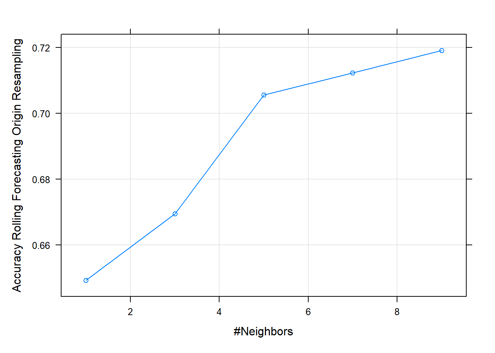

10.3 Forecasting Stock Price Movement using ML
Topic-7 provided an introduction to using R for creating Technical Indicators for traded assets. This example uses selected indicators to predict the direction of the price movement, i.e., if the prices will be higher or lower the next day. Various studies have evaluated ML methods to predict the price direction or return, for example, Shynkevich et al. (2017) examined indicators like SMA, EMA etc on various forecast horizons and window lengths.
The example will use the closing prices of a stock (BHP in this case) to create the following Technical Indicators
Lag of 5 Days Simple Moving Average : Moving averages are the simplest among all indicators: they show the average price level for you on a rolling basis.
Lag 5 Days Exponential Moving Average: The difference between SMA and EMA is that SMA weighs all candles equally whereas EMA gives exponential weights – hence the name: it overweights recent days to previous ones.
MACD: Moving Average Convergence Divergence: Uses EMA of 26 and 12 days. Designed to reveal changes in strength, direction, momentum and duration of a trend in stock price.
Lag of Log Returns
Lag of RSI: Momentum oscillator that measures the speed and change of price movements. Ranges from zero to 100. Can be used to identify general trends.
The response (dependent) variable is constructed based on the previous day(s) prices. Here we use the following indicator:
Data & Indicators
library(quantmod)
library(TTR)
library(xts) #required as the data was saved as an xts object
d_bhp = readRDS("data/bhp_prices.rds")
d_bhp = d_bhp$BHP.AX.Close #select close prices
colnames(d_bhp) = "Price"
# SMA
sma5 = lag(SMA(d_bhp, n = 5)) #notice the use of the lag function to take lagged values
# EMA
ema5 = lag(EMA(d_bhp, n = 5))
# MACD
macd1 = lag(MACD(d_bhp))
# RSI
rsi1 = lag(RSI(d_bhp, 5))
# log returns
ret1 = lag(dailyReturn(d_bhp, type = "log"))
# price director indicator
dir = ifelse(d_bhp$Price >= lag(d_bhp$Price, 5), 1, 0) #direction variable compared to 5 day before price- Combine all the indicators and response variable in a data frame
d_ex1 = cbind(dir, ret1, sma5, ema5, macd1, rsi1)
# change column names
colnames(d_ex1) = c("Direction", "Ret", "SMA", "EMA", "MACD", "Signal",
"RSI")Visualise the data
- Using the quantmod package
chartSeries(d_bhp, theme = "white", name = "BHP Closing Prices and Indicators")
addTA(d_ex1[, 1], col = 1, legend = "Direction") #Direction
addTA(d_ex1[, -1], on = NA, col = rainbow(6), legend = as.character(colnames(d_ex1[,
-1])))Figure 10.1: Direction and Technical Indicators
- The above graph can be improved using ggplot2
library(tidyr)
library(ggplot2)
# create a dataset and convert data to long
d_plot = merge.xts(d_bhp, d_ex1)
# remove NAs and then convert to long
d_plot = na.omit(d_plot)
# convert to dataframe
d_plot = data.frame(Date = index(d_plot), coredata(d_plot))
d_plot_long = pivot_longer(d_plot, -c(Date, Direction), values_to = "value",
names_to = "Indicator")
# change direction to a factor
d_plot_long$Direction = as.factor(d_plot_long$Direction)
(p2_ex = ggplot(d_plot_long, aes(Date, value, color = Indicator)) + geom_path(stat = "identity") +
facet_grid(Indicator ~ ., scale = "free") + theme_minimal())Figure 10.2: Indicators and Prices (ggplot2)
- The above is a line chart of indicators and prices. We can also create a box plot to visualise the variance in the values relative to the direction
p2_ex = ggplot(d_plot_long, aes(value, Indicator, fill = Direction)) +
geom_boxplot()
p2_ex + theme_minimal() + labs(title = "TA Indicators vs Price Direction") +
scale_fill_manual(name = "Price Direction", values = c("orange", "lightblue"))Figure 10.3: Box Plot of Indicators
- Some differences per category can be noticed
10.3.1 Using Logistic Regression
- 70:30 data split
- Time series sampling
- Stratified sampling will not keep the time order and hence its avoided
# remove NAs
d_ex1 = na.omit(d_ex1)
# convert to data frame
d_ex1 = as.data.frame(d_ex1)
# convert direction to a factor for classification
d_ex1$Direction = as.factor(d_ex1$Direction)
idx1 = c(1:round(nrow(d_ex1) * 0.7)) #create index for first 70% values to be in the testing set
d_train1 = d_ex1[idx1, ] #training set
d_test1 = d_ex1[-idx1, ] #testing setTraining Setup
- Time series cross validate for resampling: 250 day window 30 days for prediction (this can be changed)
- Data preprocessing is conducted to normalise the scale of the values
glmmethod with binomial family for the binary classification
library(caret)
set.seed(999)
# control
cntrl1 = trainControl(method = "timeslice", initialWindow = 250, horizon = 30,
fixedWindow = TRUE)
# preprocesing
prep1 = c("center", "scale")
# logistic regression
logit_ex1 = train(Direction ~ ., data = d_train1, method = "glm", family = "binomial",
trControl = cntrl1, preProcess = prep1)
logit_ex1 #final model accuracyGeneralized Linear Model
434 samples
6 predictor
2 classes: '0', '1'
Pre-processing: centered (6), scaled (6)
Resampling: Rolling Forecasting Origin Resampling (30 held-out with a fixed window)
Summary of sample sizes: 250, 250, 250, 250, 250, 250, ...
Resampling results:
Accuracy Kappa
0.7711828 0.4982703summary(logit_ex1$finalModel) #summary of the final model
Call:
NULL
Deviance Residuals:
Min 1Q Median 3Q Max
-3.1642 -0.4752 0.1207 0.4923 2.3637
Coefficients:
Estimate Std. Error z value Pr(>|z|)
(Intercept) 0.2040 0.1447 1.410 0.158
Ret -0.2710 0.2261 -1.198 0.231
SMA -27.3260 5.9692 -4.578 4.70e-06 ***
EMA 27.1922 5.9461 4.573 4.81e-06 ***
MACD 0.4719 1.1980 0.394 0.694
Signal -0.7815 0.9917 -0.788 0.431
RSI 2.1482 0.5440 3.949 7.86e-05 ***
---
Signif. codes: 0 '***' 0.001 '**' 0.01 '*' 0.05 '.' 0.1 ' ' 1
(Dispersion parameter for binomial family taken to be 1)
Null deviance: 600.54 on 433 degrees of freedom
Residual deviance: 310.82 on 427 degrees of freedom
AIC: 324.82
Number of Fisher Scoring iterations: 6- Variable importance
- In the case of multiple predictor variables, we want to understand which variable is the most influential in predicting the response variable.
library(vip)
vip(logit_ex1, geom = "point") + theme_minimal()Figure 10.4: Variable Importance
Predictive Accuracy
- ML models should be checked for predictive accuracy on the test set
- caret provides
predictfunction to create predictions - These predictions can be assessed based on the confusion matrix
Confusion Matrix - When applying classification models, we often use a confusion matrix to evaluate certain performance measures.
A confusion matrix is simply a matrix that compares actual categorical levels (or events) to the predicted categorical levels.
Prediction of the right level; refer to this as a true positive.
Prediction of a level or event that did not happen this is called a false positive (i.e. we predicted a customer would redeem a coupon and they did not).
Alternatively, when we do not predict a level or event and it does happen that this is called a false negative (i.e. a customer that we did not predict to redeem a coupon does).
Let’s predict using the final model and assess using the confusion matrix.
pred1 = predict(logit_ex1, newdata = d_test1) #prediction on the test data
confusionMatrix(data = pred1, reference = d_test1$Direction)Confusion Matrix and Statistics
Reference
Prediction 0 1
0 65 17
1 22 82
Accuracy : 0.7903
95% CI : (0.7247, 0.8464)
No Information Rate : 0.5323
P-Value [Acc > NIR] : 2.293e-13
Kappa : 0.5774
Mcnemar's Test P-Value : 0.5218
Sensitivity : 0.7471
Specificity : 0.8283
Pos Pred Value : 0.7927
Neg Pred Value : 0.7885
Prevalence : 0.4677
Detection Rate : 0.3495
Detection Prevalence : 0.4409
Balanced Accuracy : 0.7877
'Positive' Class : 0
- The model provides decent accuracy which is higher than the No Information Rate and also statistically significant.
There are other analyses which can be conducted on logistic regression, for example, ROC (Receiver Operating Characteristic) curve analysis for the Area Under the Curve.
10.3.2 Using K-NN
- This section will implement the previous model using k-nearest neigbour algorithm using the caret package
- Then we will use the same split as the logistic regression
- We are selecting the model based on Accuracy & Kappa
- Accuracy: Accuracy measures the overall correctness of the classifier \(\frac{(TN+TP)}{Total}\). Objective: maximise
- Kappa (Cohen’s Kappa): Its like Accuracy but it is normalised at the baseline of random chance on the dataset. It compares observed accuracy to expected accuracy.
- A grid search is used to search for an optimal value for k
set.seed(999)
grid1 = expand.grid(k = seq(1, 10, by = 2)) #to search from k=1 to k=10
knn_ex1 = train(Direction ~ ., data = d_train1, method = "knn", tuneGrid = grid1,
trControl = cntrl1, preProcess = prep1)- View the fit
plot(knn_ex1) #may suggest using a wider grid
knn_ex1k-Nearest Neighbors
434 samples
6 predictor
2 classes: '0', '1'
Pre-processing: centered (6), scaled (6)
Resampling: Rolling Forecasting Origin Resampling (30 held-out with a fixed window)
Summary of sample sizes: 250, 250, 250, 250, 250, 250, ...
Resampling results across tuning parameters:
k Accuracy Kappa
1 0.6492473 0.2964789
3 0.6694624 0.3516452
5 0.7055914 0.3710057
7 0.7122581 0.3792520
9 0.7191398 0.3964104
Accuracy was used to select the optimal model using the largest value.
The final value used for the model was k = 9.Variable importance can’t be obtained here as KNN does not produce a model
Predictive Accuracy
Let’s predict using the final model and assess using the confusion matrix.
pred2 = predict(knn_ex1, newdata = d_test1) #prediction on the test data
confusionMatrix(data = pred2, reference = d_test1$Direction)Confusion Matrix and Statistics
Reference
Prediction 0 1
0 62 21
1 25 78
Accuracy : 0.7527
95% CI : (0.6842, 0.8129)
No Information Rate : 0.5323
P-Value [Acc > NIR] : 4.896e-10
Kappa : 0.5019
Mcnemar's Test P-Value : 0.6583
Sensitivity : 0.7126
Specificity : 0.7879
Pos Pred Value : 0.7470
Neg Pred Value : 0.7573
Prevalence : 0.4677
Detection Rate : 0.3333
Detection Prevalence : 0.4462
Balanced Accuracy : 0.7503
'Positive' Class : 0
A comparison betweek Logistic Regression and KNN can be made based on their predictive accuracy.
The two models can also be compared based on their resampling results.
The random number seeds should be initialised to the same value for resampling comparison.
The following code compares the model fits.
resamp1 = resamples(list(logit = logit_ex1, knn = knn_ex1))
summary(resamp1)
Call:
summary.resamples(object = resamp1)
Models: logit, knn
Number of resamples: 155
Accuracy
Min. 1st Qu. Median Mean 3rd Qu. Max. NA's
logit 0.5666667 0.7333333 0.7666667 0.7711828 0.8333333 0.9 0
knn 0.5333333 0.6666667 0.7333333 0.7191398 0.8000000 0.9 0
Kappa
Min. 1st Qu. Median Mean 3rd Qu. Max. NA's
logit -0.2745098 0.4666667 0.5414847 0.4982703 0.6270974 0.7345133 0
knn -0.2000000 0.2811483 0.4104803 0.3964104 0.5720385 0.7945205 0bwplot(resamp1, metric = "Accuracy")Figure 10.5: Resample Accuracy comparison
- The graph provides a comparison of the overall accuracy of the model (not the predictions).